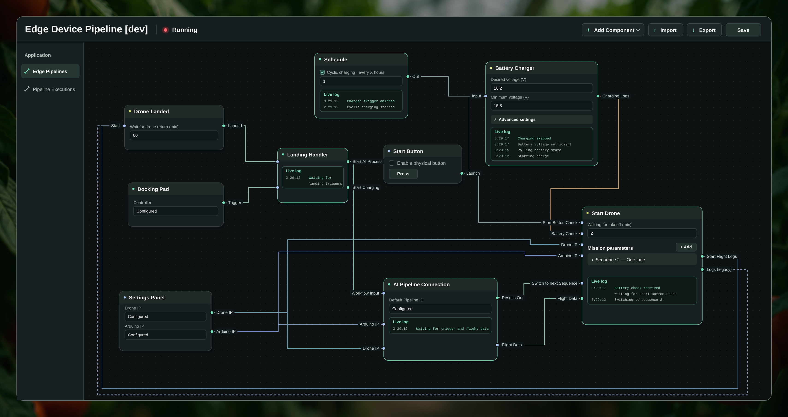
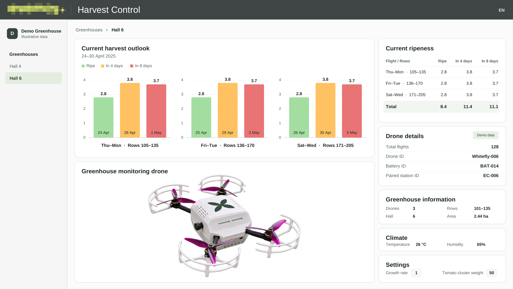

Industry · Avemoy FlexCo
Greenhouse AI & autonomous drone operations
Turning aerial greenhouse footage into crop monitoring data and connecting the vision pipeline to field hardware.
Computer vision in four stages
Challenge
A greenhouse monitoring system has to do more than run a model. It has to collect footage reliably, process it on edge hardware, and make the results available for crop monitoring.
My contribution
I lead development of AI and software pipelines for greenhouse crop monitoring. I work across fruit analysis, Python services for event-driven workflows, web-based configuration, and integration with drones and docking hardware.
Approach
Connect configurable React and TypeScript interfaces to FastAPI services and Dockerized processing on Linux edge devices. Model inference, data processing, and hardware events sit within the same workflow.
Outcome
The system supports drone-based data collection and crop monitoring. Avemoy’s public Hortiscan overview describes how local processing feeds reports for greenhouse operators.
Watch the public Avemoy demo Hortiscan product overviewPipeline and dashboard previews





Tools & methods
Python, FastAPI, React, TypeScript, Docker, Linux, Computer vision